RLinf to Harness VLA (CC), aggregate perturbation success.
Memory-guided primitive composition
Harness frozen VLAs into reliable robot primitives.
Harness VLA keeps the VLA frozen and turns it into a retryable contact-rich primitive. A planner handles semantic grounding, spatial re-binding, staging, transport, and recovery through a fixed analytic primitive library.
Frozen VLA, no finetuning
Fixed primitive vocabulary
Memory-guided retry
Anonymous submission to CoRL 2026
Harness VLA: Steering Frozen VLAs into Reliable Manipulation Primitives via Memory-Guided Agents
Language-conditioned manipulation requires both precise contact-rich control and robust reasoning over language, scenes, and long horizons. End-to-end VLA models provide strong local visuomotor skills, but often fail under semantic retargeting, goal re-binding, spatial-layout shifts, and unstable local contacts.
Harness VLA exposes a frozen VLA as a retryable contact-rich primitive and composes it with a fixed analytic primitive library for grounding, staging, transport, navigation, and release. The harness learns the operating range of these primitives from task-specific traces, global success rules, and failure models.
The central claim is asymmetric delegation: the VLA remains a local contact specialist, while the planner owns task binding, non-contact execution, and recovery after failed or incomplete local attempts.
RLDX-1 weighted overall to Harness VLA (Codex).
Harness VLA (Codex) and Harness VLA (CC).
How Harness VLA Works
The planner conditions on task language, RGB-D observations, proprioception, Task Specific Memory, and Global Memory. It emits structured calls to a fixed primitive library rather than expanding the primitive set at deployment time.
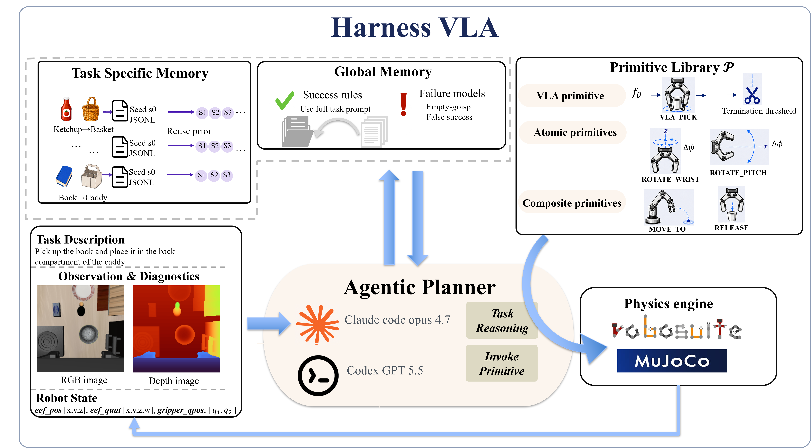
Freeze the VLA as a contact specialist
VLA ACT is the only learned primitive. It is invoked for grasping, constrained placement, fixture actuation, insertion, and other local contact-rich phases.
Keep the action interface fixed
The planner emits JSON calls to predefined VLA, composite analytic, and atomic analytic primitives. It never writes new deployment-time skills or low-level actions.
Use memory to re-ground and retry
Task traces preserve the solution skeleton, while Global Memory records success rules and failure models such as empty grasps and false completion checks.
Explore on a reference seed
RESET is available only during exploration. The planner tries staging orders, pre-contact poses, VLA invocation timing, and stop predicates until it finds a successful primitive program.
Store a reusable solution skeleton
Task Specific Memory stores a JSONL trace and summary. Concrete coordinates are treated as reference bindings, so deployment must re-ground objects and targets from live RGB-D observations.
Deploy without reset or new skills
During formal evaluation, RESET is disabled and the budget is shorter. The planner retrieves the trace, uses Global Memory, and executes through the same fixed primitive interface.

Short-burst frozen VLA execution for local contact-rich interaction.
Deterministic transport, pose co-variation, and mobile-base staging.
Single-channel wrist, gripper, release, and fine base adjustments.
Task Gallery
Representative rollouts from the Overleaf source show how the planner re-stages contact attempts and uses analytic primitives around VLA execution.
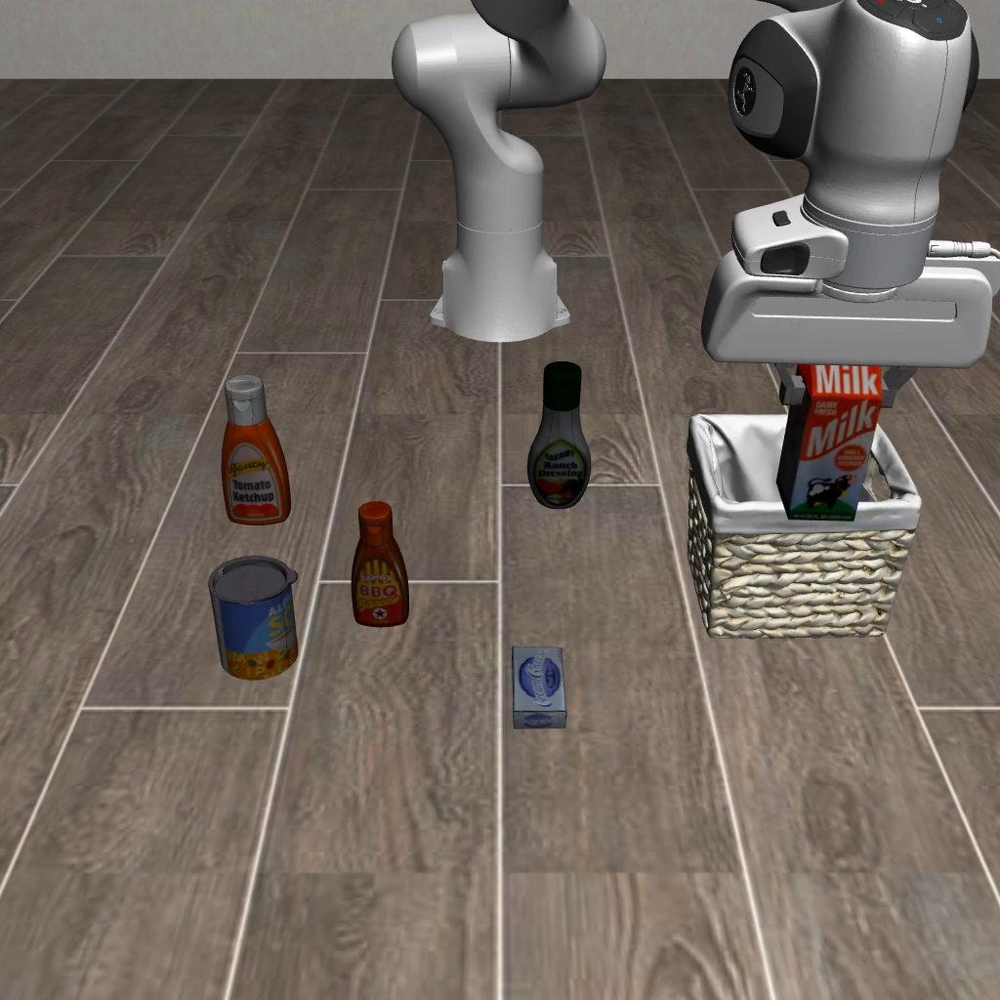


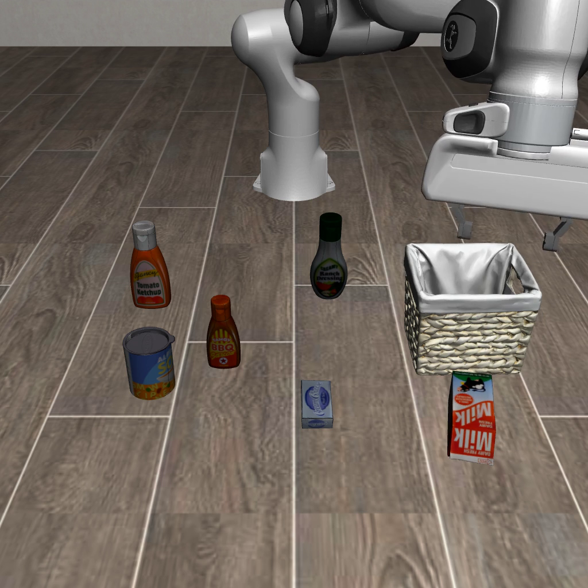
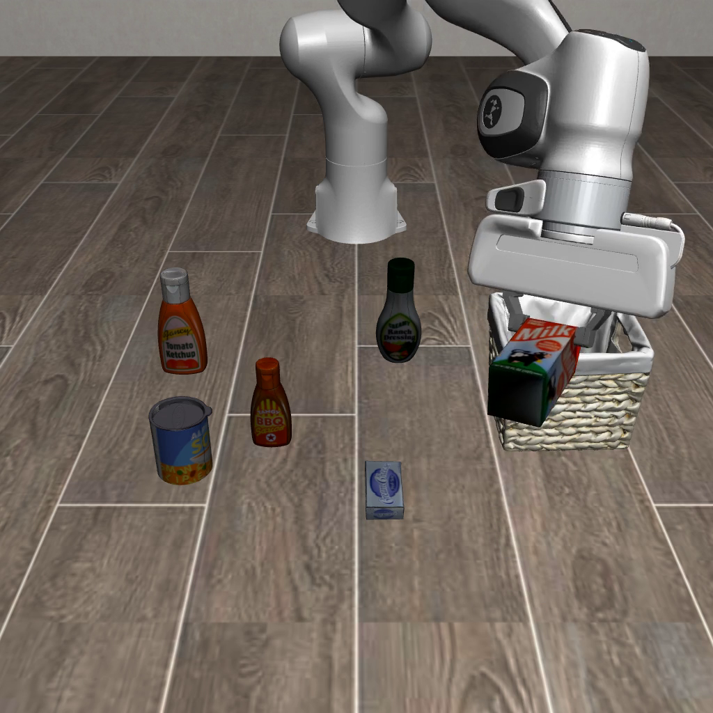

LIBERO-Pro Object task 4
The planner repeatedly invokes VLA ACT around the milk carton after intermediate grasping or placement attempts leave the object outside or partially inside the basket.

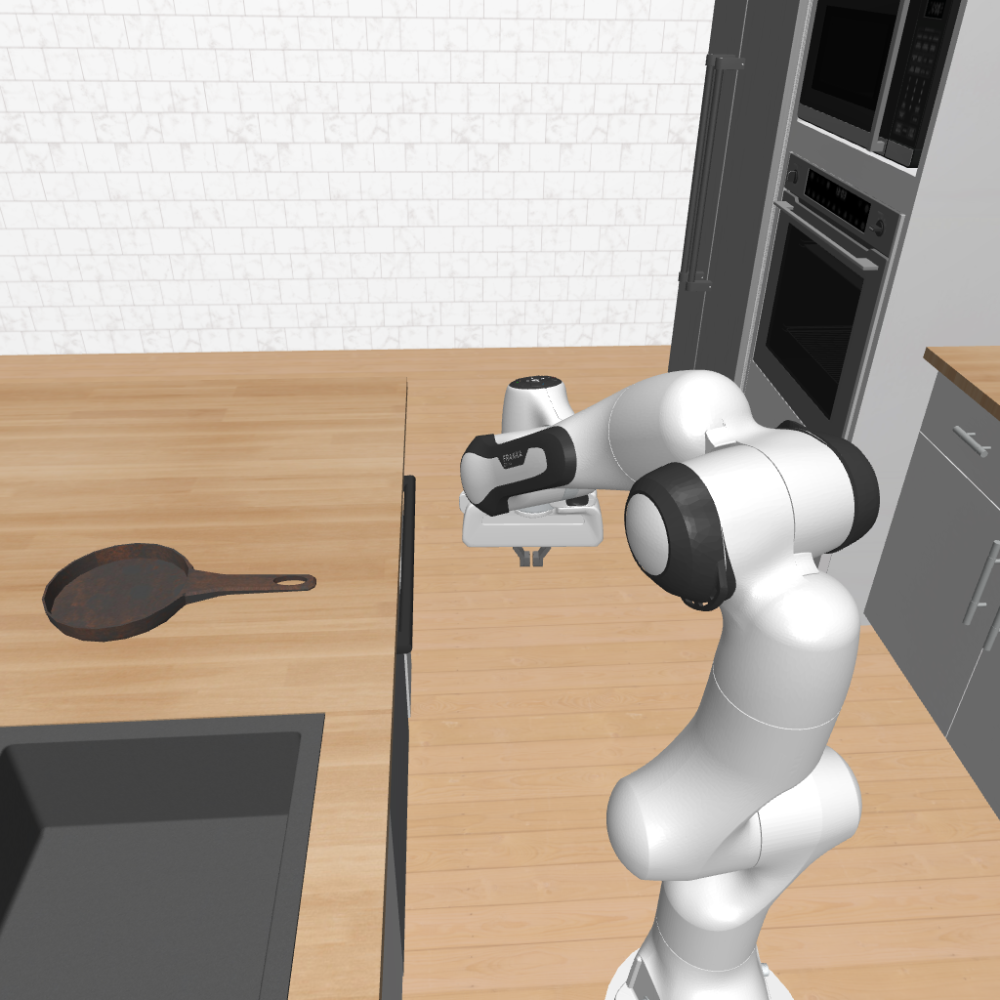


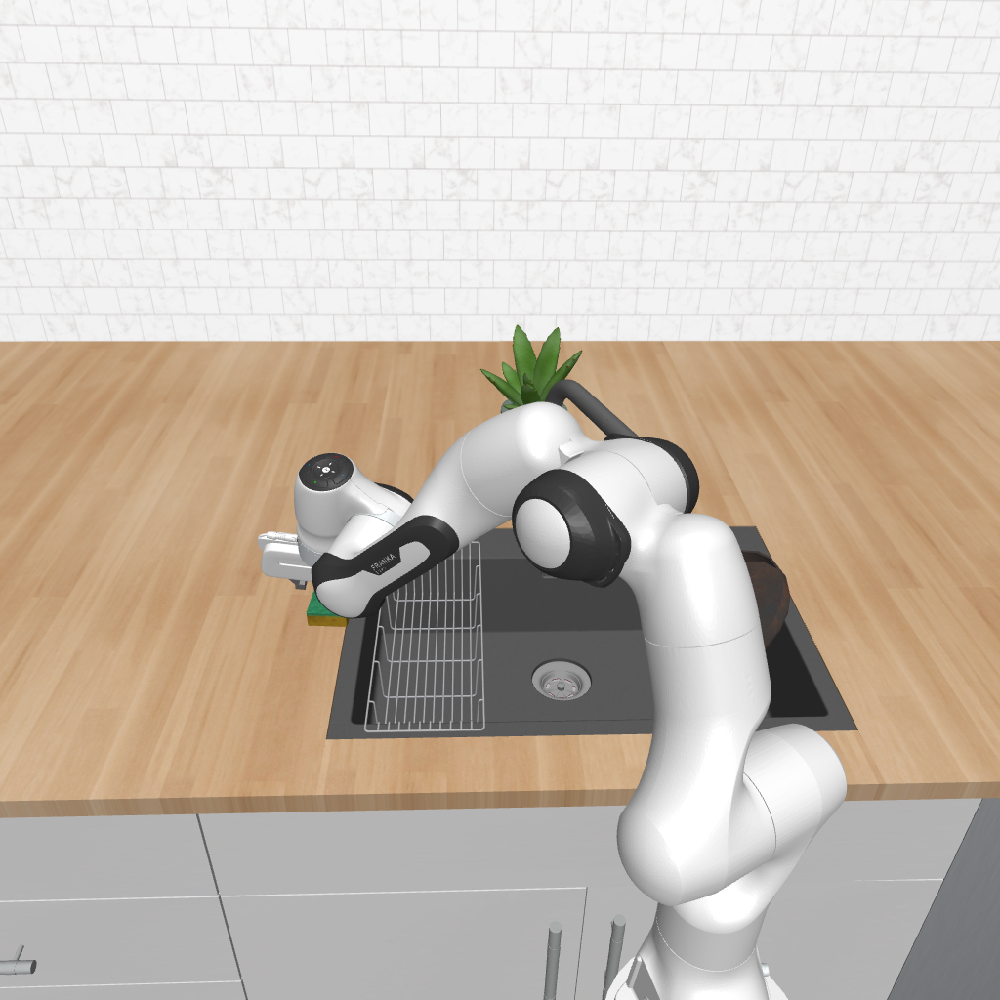
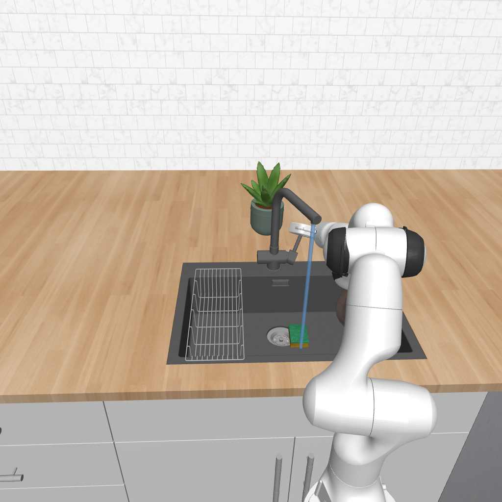
RoboCasa365 PreSoakPan
The planner adjusts the mobile base and arm pose, retries VLA ACT until a stable grasp is obtained, places the pan into the sink, and actuates the faucet.

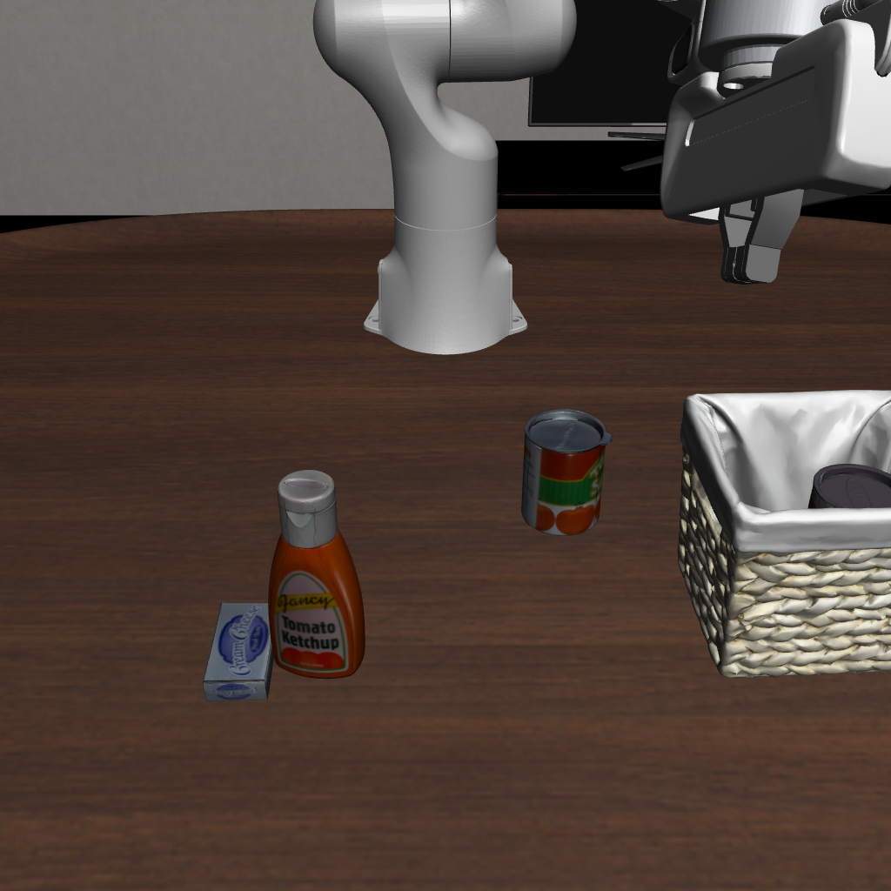

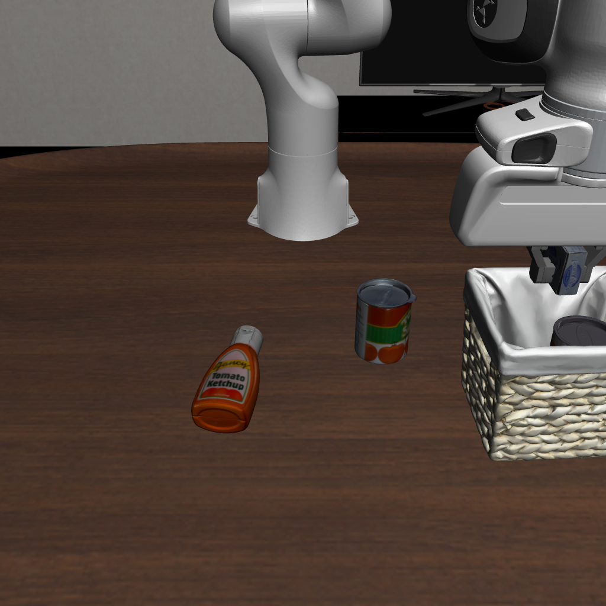
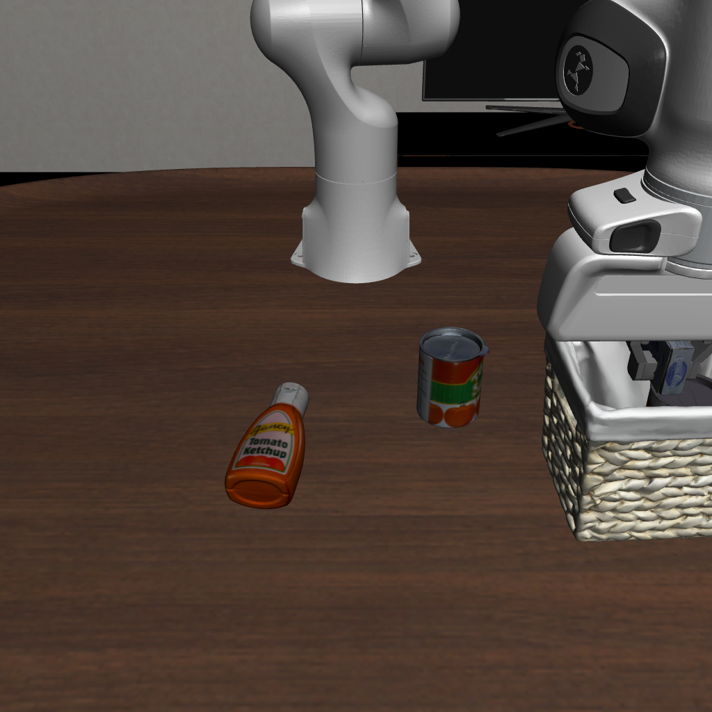

LIBERO-10-Pro swap
The agent detects that the VLA did not actually grasp the object, moves back, retries VLA ACT, then completes the subtask with MOVE TO and RELEASE.


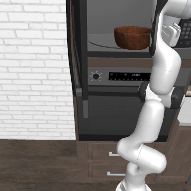
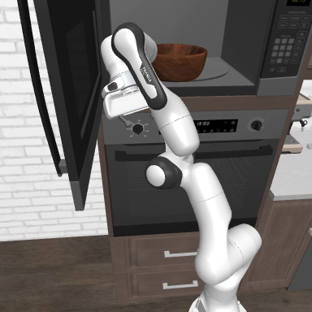
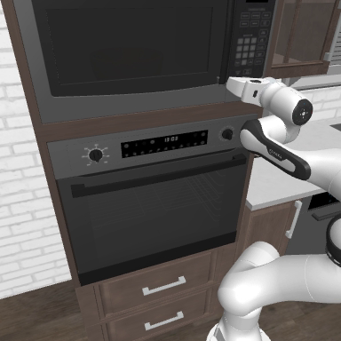
RoboCasa SteamInMicrowave
The planner combines VLA grasping and placement with analytic search, repositioning, door operation, navigation, and switch pressing.
Benchmark Results
We evaluate Harness VLA across standard LIBERO suites, perturbed LIBERO-Pro tasks, RoboCasa365, and RoboTwin C2R.


Harness VLA (CC) overall success.
Harness VLA (CC) aggregate success under perturbations.
Harness VLA (Codex) weighted overall success.
Harness VLA (Codex) and Harness VLA (CC).
Standard LIBERO success rate (%)
RLinf and Harness VLA (CC) are evaluated on 100 trials per suite.
| Method | Spatial | Object | Goal | LIBERO-10 | Overall |
|---|---|---|---|---|---|
| OpenVLA | 84.7 | 88.4 | 79.2 | 53.7 | 76.5 |
| NORA | 85.6 | 89.4 | 80.0 | 63.0 | 79.5 |
| pi0 | 96.8 | 98.8 | 95.8 | 85.2 | 94.2 |
| RLinf | 99.0 | 96.0 | 97.0 | 89.0 | 95.3 |
| AtomVLA | 96.4 | 99.6 | 97.6 | 94.4 | 97.0 |
| Harness VLA (CC) | 97.0 | 100.0 | 94.0 | 93.0 | 96.0 |
LIBERO-Pro aggregate success rate (%)
T = instruction-redirection; S = position-swap. Each cell aggregates 100 trials except the noted LIBERO-10-S recording issue in the source caption.
| Method | Spat-T | Spat-S | Obj-T | Obj-S | Goal-T | Goal-S | L10-T | L10-S | Overall |
|---|---|---|---|---|---|---|---|---|---|
| OpenVLA | 0 | 0 | 0 | 0 | 0 | 0 | 0 | 0 | 0.0 |
| pi0 | 0 | 0 | 0 | 2 | 0 | 0 | 0 | 0 | 0.3 |
| pi0.5 | 1 | 20 | 1 | 17 | 2 | 38 | 1 | 8 | 11.0 |
| MolmoAct | 0 | 0 | 0 | 6 | 0 | 0 | 6 | 0 | 1.5 |
| NORA | 0 | 0 | 0 | 0 | 0 | 0 | 0 | 0 | 0.0 |
| X-VLA | 0 | 0 | 8 | 2 | 9 | 1 | 10 | 0 | 3.8 |
| AtomVLA | 1 | 16 | 0 | 10 | 11 | 2 | 9 | 1 | 6.3 |
| Cap-X | 14 | 12 | 18 | 22 | 17 | 26 | / | / | 18.2 |
| RATS | 31 | 29 | 63 | 61 | 36 | 43 | / | / | 43.8 |
| RLinf | 42 | 59 | 71 | 78 | 45 | 42 | 49 | 14 | 50 |
| Harness VLA (Codex) | 81 | 69 | 94 | 91 | 75 | 66 | 52 | 48 | 72 |
| Harness VLA (CC) | 94 | 80 | 88 | 90 | 87 | 87 | 71 | 62 | 82 |
RoboCasa365 success rate (%)
Harness VLA uses 10 seeds per Atomic-Seen task and 5 seeds per Composite-Seen / Composite-Unseen task.
| Method | Atomic-Seen | Composite-Seen | Composite-Unseen |
|---|---|---|---|
| RLDX-1 | 60 | 21 | 5 |
| WorldDreamer | 66.3 | 26.7 | 9.0 |
| pi0.5 | 39.6 | 7.1 | 1.2 |
| pi0 | 34.6 | 6.1 | 1.1 |
| Harness VLA (Codex) | 92 | 56 | 14 |
| Harness VLA (CC) | 79 | 48 | 15 |
Zero-shot LIBERO-Pro Goal success rate (%)
No target-setting Task Specific Memory retrieval; 10 seeds per task.
| Setting | Method | Task 0 | Task 1 | Task 2 | Task 3 | Task 4 | Task 5 | Task 6 | Task 7 | Task 8 | Task 9 | Average |
|---|---|---|---|---|---|---|---|---|---|---|---|---|
| Pos (S) | Cap-X | 0 | 4 | 0 | 36 | 22 | 60 | 4 | 2 | 62 | 66 | 25.6 |
| Pos (S) | Harness VLA (CC) | 0 | 10 | 0 | 20 | 90 | 0 | 10 | 80 | 100 | 0 | 31.0 |
| Task (T) | Cap-X | 0 | 0 | 10 | 38 | 12 | 4 | 34 | 12 | 40 | 18 | 16.8 |
| Task (T) | Harness VLA (CC) | 10 | 100 | 90 | 100 | 20 | 80 | 90 | 100 | 100 | 100 | 79.0 |
RoboTwin C2R success rate (%)
Harness VLA is evaluated on 50 tasks with 5 randomized seeds per task.
| Benchmark | GR00T-N1.7 | pi0.5 | StarVLA | Harness VLA (Codex) | Harness VLA (CC) |
|---|---|---|---|---|---|
| RoboTwin C2R | 20.7 | 47.9 | 10.6 | 58 | 58 |
Why It Works
The source paper analyzes three mechanisms: semantic re-grounding, planner-staged VLA invocation, and analytic decomposition around contact-rich control.
Planner-level semantic re-grounding restores task-conditioned behavior
In perturbed LIBERO-Pro cells, RLinf may repeat the standard behavior even when the instruction or layout changes. Harness VLA re-grounds targets through the planner.


Planner-staged VLA invocation improves frozen-policy reliability
Each panel plots cumulative task success as the maximum number of VLA primitive invocations per episode increases.
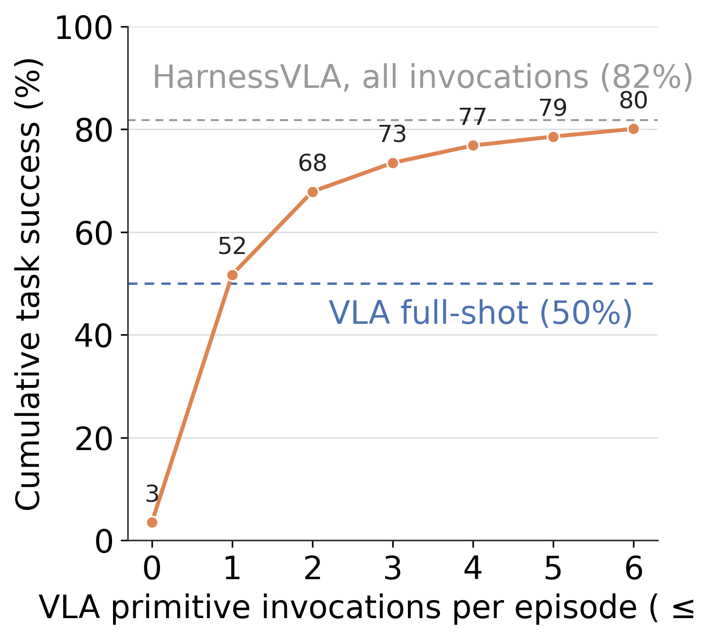
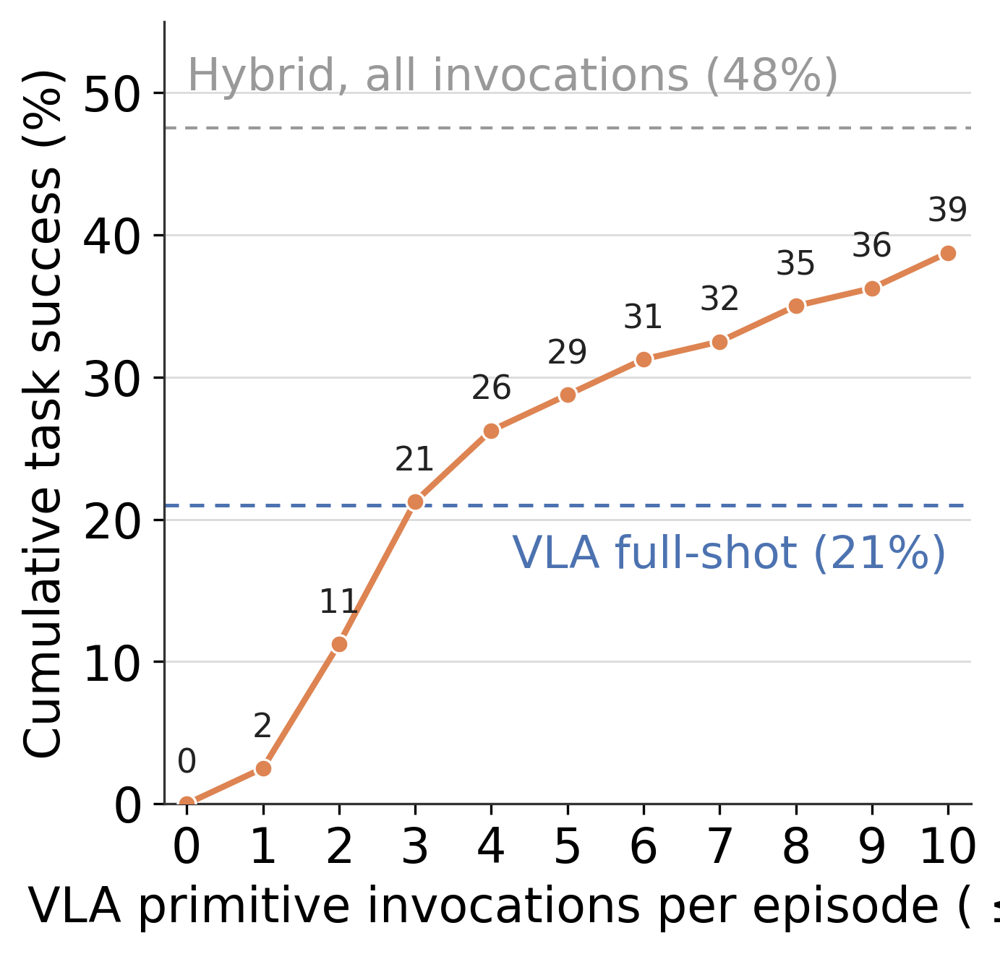
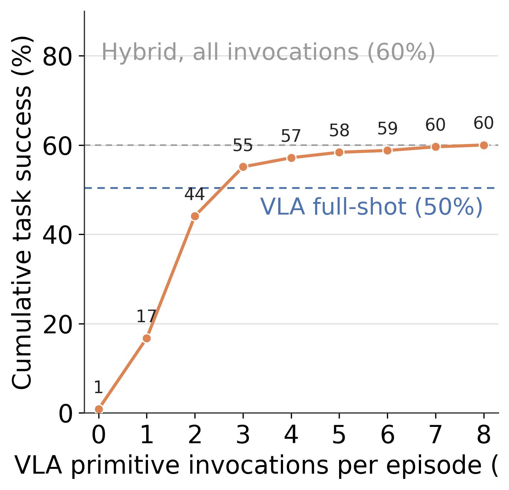
Analytic primitives isolate non-contact execution
Analytic primitives handle transport, staging, base/wrist adjustment, retreat, and release. The VLA remains responsible for contact-rich local phases.
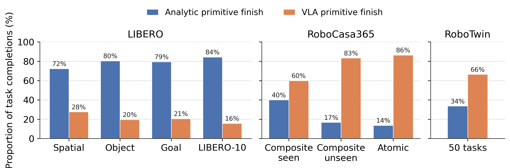
Conclusion and Limitations
Harness VLA casts a frozen VLA as a single contact-rich primitive interface within an LLM-driven agent, delegating transport, posture, navigation, and release phases to the planner.
Open feedback loop
The current framework is limited by an open feedback loop between the high-level planner and low-level VLA.
No joint fine-tuning
The system lacks joint fine-tuning via environmental rewards and human preferences.
Captioning bottleneck
The absence of fine-grained image captioning constrains structural reasoning in highly cluttered, long-horizon tasks.
BibTeX
The current source is an anonymous CoRL 2026 submission. Update author, venue, and publication metadata before public release.
@inproceedings{anonymous2026harnessvla,
title = {Harness VLA: Steering Frozen VLAs into Reliable Manipulation Primitives via Memory-Guided Agents},
author = {Anonymous},
booktitle = {Submitted to the 10th Conference on Robot Learning},
year = {2026}
}